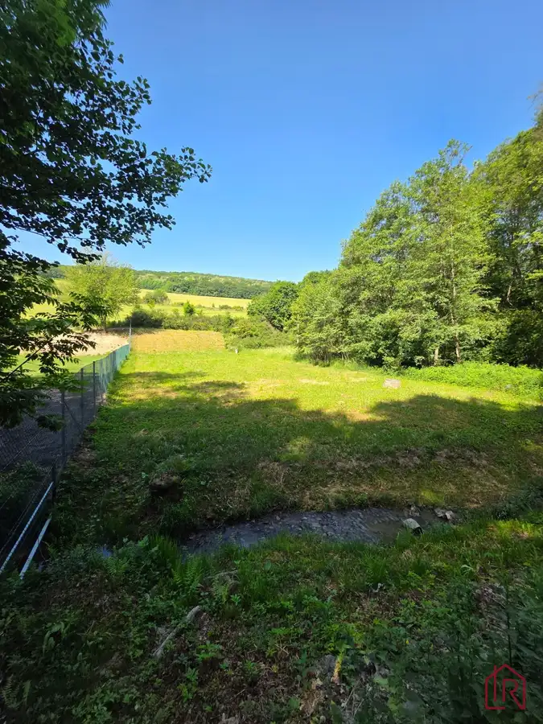
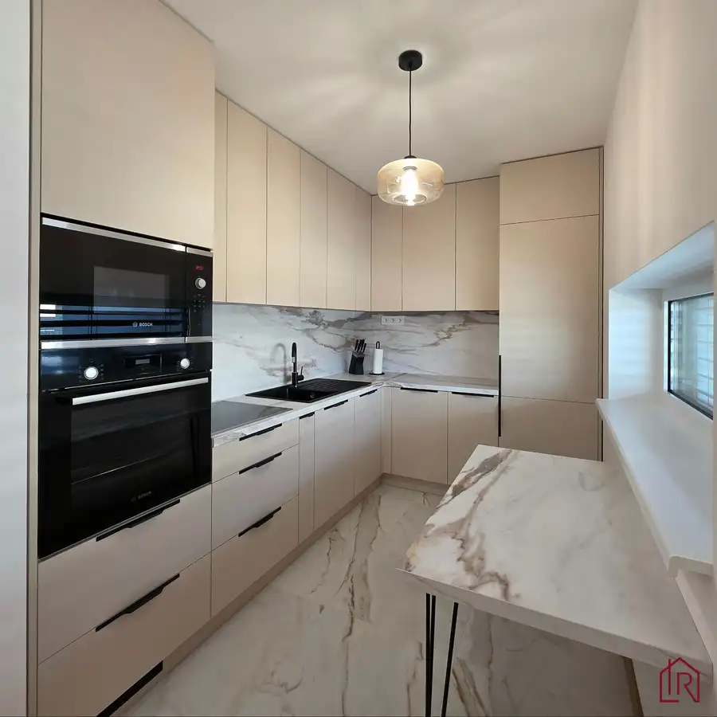

3-izbový byt s loggiou na predaj, Košice – Terasa
mestská časť Západ, Košice
- Dispozícia3-izbový
- Plocha65 m²
- Poschodie0.
- Stavčiastočne prerobený
- Vlastníctvoosobné
- Energetická triedaB
O nehnuteľnosti
3-izbový byt na Ružovej ulici v Košiciach – Terasa. 65 m², zasklená loggia, špajza a možnosť rekonštrukcie podľa vlastných predstáv.
Spoločnosť Impulz Real a
Ing. Marcela Almužňáková
ponúkajú na predaj 3-izbový byt vo vyhľadávanej mestskej časti Košice – Západ (Terasa) na Ružovej ulici, ktorý ponúka príjemné mestské bývanie s množstvom zelene a výbornou dostupnosťou do centra mesta. Byt je ideálnou voľbou pre tých, ktorí hľadajú priestor s potenciálom vytvoriť si domov podľa vlastných predstáv.
Interaktívny pôdorys nájdete na tejto stránke:
https://floorplanner.com/projects//spaceplanner
✦ O byte, ktorý ponúka priestor aj možnosti
Byt s výmerou 65 m² pôsobí svetlo a vzdušne. Novým majiteľom dáva možnosť rekonštrukcie podľa vlastného štýlu a potrieb. Súčasťou bytu je zasklená loggia, ktorá prirodzene rozširuje obytný priestor a vytvára príjemné miesto na oddych počas celého roka. Praktickým benefitom je aj špajza, ktorá poskytuje dodatočný úložný priestor.
✦ Dispozícia bytu
• vstupná chodba s praktickým úložným priestorom.
• priestranná kuchyňa s obývačkou
• 2 samostatné izby so vstavanými skriňami
• kúpeľňa s WC
• zasklená loggia
• špajza
Dispozícia bytu je praktická a vhodná pre rodinné bývanie aj komfortné mestské bývanie pre pár.
✦ Technické informácie a benefity
• výmera: 65 m²
• 3 izby
• Ružová ulica – Terasa
• plastové okná
• plávajúce podlahy
• zasklená loggia
• bezpečnostné dvere
• špajza
• možnosť rekonštrukcie podľa vlastných predstáv
• zrekonštruovaný bytový dom
• vyhľadávaná lokalita plná zelene
• výborná občianska vybavenosť a dostupnosť
✦ Lokalita, ktorá patrí medzi najobľúbenejšie v Košiciach
Košice – Západ (Terasa) je dlhodobo jednou z najvyhľadávanejších mestských častí v Košiciach. Obyvatelia oceňujú najmä množstvo zelene, kompletnú občiansku vybavenosť, školy, škôlky, obchody, zdravotnícke zariadenia aj výbornú dostupnosť do centra mesta.
Lokalita ponúka príjemné mestské bývanie s atmosférou, ktorá pôsobí pokojne a zároveň prakticky pre každodenný život.
✦ Pre koho je byt ideálny?
Táto nehnuteľnosť je vhodná pre rodinu, pár aj ako investícia. Osloví najmä tých, ktorí hľadajú byt v dobrej lokalite a chcú si ho prispôsobiť podľa vlastných predstáv.
Pre bližšie informácie sa s dôverou môžete kedykoľvek obrátiť na rodinného realitného makléra:
Ing. Marcela Almužňáková
Teším sa na spoluprácu.
„VŠETKO POD JEDNOU STRECHOU“ – zabezpečenie právnych služieb advokátom, služby financovania, protokolárne odovzdanie nehnuteľnosti, prepis energií a kompletný servis so spoľahlivým tímom odborníkov s dlhoročnými skúsenosťami.
Parametre
| Celková rozloha | 65 m² |
|---|---|
| Úžitková plocha | 65 m² |
| Poschodie | prízemie |
| Počet izieb | 3 |
| Vlastníctvo | osobné |
| Stav | čiastočne prerobený |
| Odvoz odpadu | áno |
| Plyn | áno |
| Internet | lokálny poskytovateľ |
| Kúpeľňa | vaňa |
| Vykurovanie | spoločné |
| Balkón | nie |
| Lódžia | áno |
| Terasa | nie |
| Pivnica | nie |
| Garáž | nie |
| Výťah | áno |
| Postavené z | panel |
| Zariadenie | čiastočne |
| Zateplený objekt | áno |
| Klimatizácia | nie |
| Energetický certifikát | B |
| Predzáhradka | nie |
| Okná | plastové |
| Dátum zverejnenia | 12. 5. 2026 |
Kde to je
Mohlo by Vás zaujímať

Záhrady2 126 000 €KH-1090, Pozemok, záhrada, Košice, Klatovianka Okolie, Nižný Klátov 1188 m² Impulz Real a Ing. Marcela Almužňáková predstavujú pozemok-záhradu v lokalite Nižný Klatov - Klatovianka. Pozemok o výmere 1188 m² je rovinatý a v…
Byt10 Cena dohodou2i, OV, 60m2 + terasa, novostavba Lorinčík- Háje, zariadený mestská časť Lorinčík, Košice 2-izbový60 m²1. podlažie *** 2 izbový tehlový, luxusný byt , novostavba, Košice, Lorinčík- Háje, prenájom *** *** kompletne dokončený, zariadený, ešte nikým neobývaný *** ***…